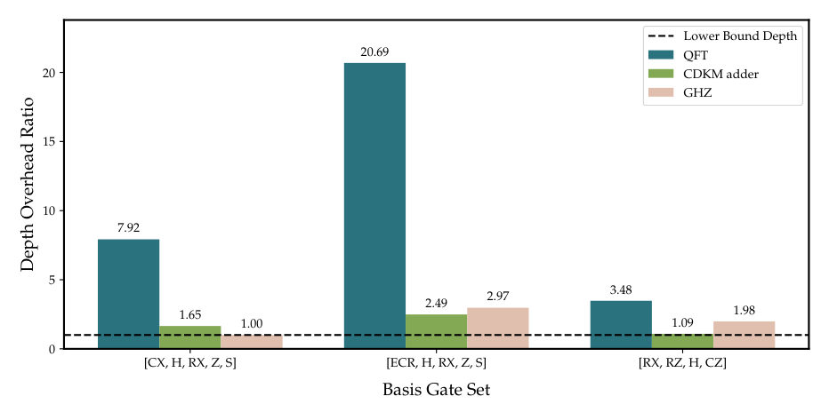
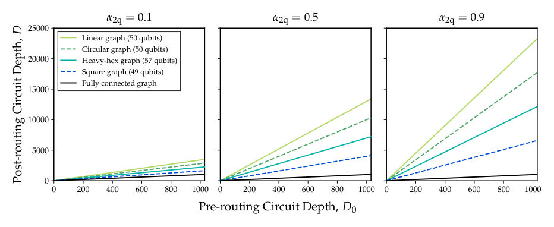
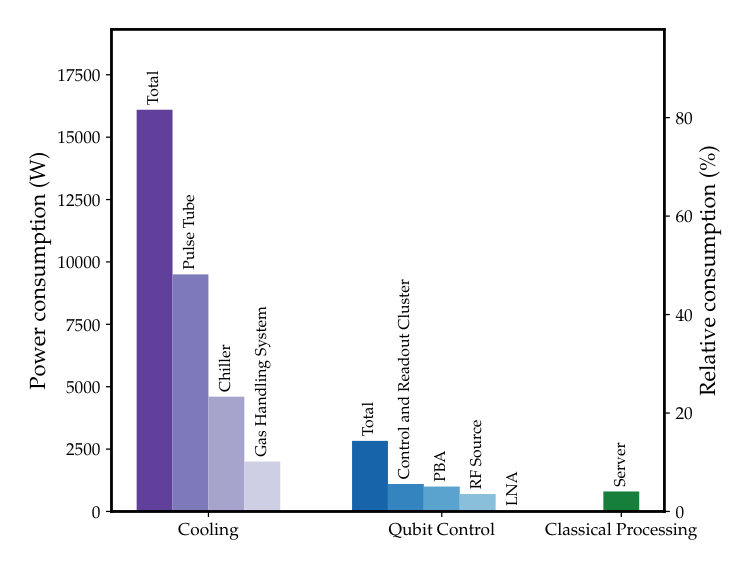

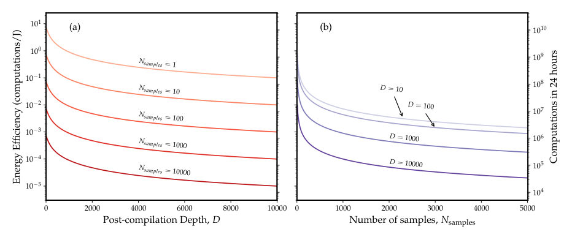
← Index · ← Previous · Next →
Authors: A. B. Zorin
Type: theory · Category: other · PDF: https://arxiv.org/pdf/2605.14080v1
Analysis basis: full PDF text, analyzed in chunks
Topic relevance: non-equilibrium dynamics 2/5
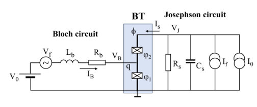
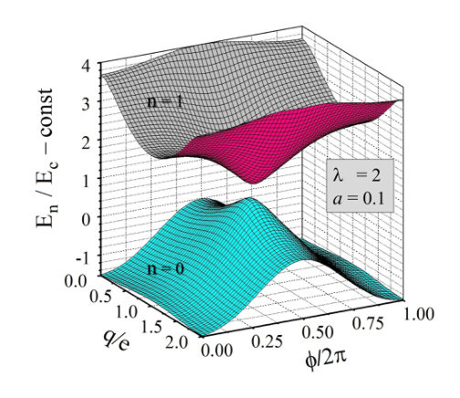
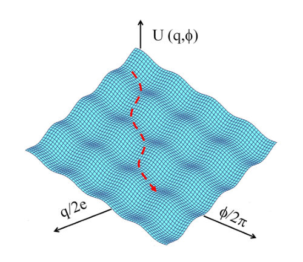
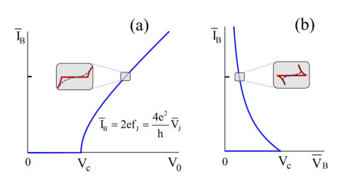
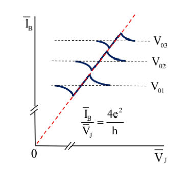
Summary. This paper proposes a method to use a DC-driven Bloch transistor to create a quantum resistance standard. By phase-locking Josephson and Bloch oscillations, the device exhibits quantized transconductance related to the resistance quantum. This approach offers a way to perform quantum metrology without the need for high magnetic fields.
Why it may be interesting. not directly relevant
Main problem. The paper investigates the possibility of achieving phase-locking between Josephson oscillations and Bloch oscillations in a DC-driven Bloch transistor to establish a new quantum standard of resistance.
Main result. The authors demonstrate that DC-driven phase-locking leads to the formation of dual Shapiro steps and a fundamental transconductance of 1/Rq, providing a resistance standard that does not require strong magnetic fields.
Method. The study uses a modified Resistively Shunted Junction (RSJ) model, a double Fourier series expansion of the ground-state energy, and the slowly-varying phase method to analyze the dynamics.
Model / system. A Bloch transistor (BT) consisting of two small-capacitance Josephson junctions in series with a superconducting island, coupled to a Josephson circuit and driven by DC voltage and current sources.
Key observables. Josephson frequency (fJ), Bloch frequency (fB), transconductance (IB/VJ), current steps (dual Shapiro steps), and island voltage (VB).
Important parameters / regimes. Resistance quantum (Rq), asymmetry parameter (a), modulation depth (mu), blockade voltage (Vc), and the high-frequency/low-impedance regimes.
Assumptions / limitations. The system is assumed to remain in its ground state (adiabatic approximation), the Josephson part is overdamped, and the backaction of the Bloch transistor on the Josephson circuit is negligible.
Figures summary. Figure 5 shows transconductance curves with slanted steps; Figure 6 illustrates a BT design using a dc SQUID for tuning; Figure 7 presents a proposed superconducting version of the quantum metrology triangle.
Paper structure. The paper begins by proposing the device and its physical mechanism, moves to the Hamiltonian and circuit dynamics, develops the mathematical framework for phase-locking and Fourier analysis, calculates specific observables like step width and transconductance, and concludes with implications for quantum metrology.
We propose a superconducting circuit based on the Bloch transistor, a quantum device consisting of two small-capacitance Josephson junctions connected in series and having a small island in between. This device is driven by two dc electrical sources controlling Josephson oscillations of frequency $f_J = 2e\overline{V_J}/h$, related to the average voltage $\overline{V_J}$ on the transistor, and Bloch oscillations of frequency $f_B = \overline{I_B}/2e$, related to the average current $\overline{I_B}$ injected into the transistor island. Due to the Bloch transistor properties, these two types of oscillations can mutually phase lock, i.e., $f_J = f_B$. This leads to formation of current steps on the current-voltage curve at $\overline{I}_B = 2ef_J$, which are similar to the dual Shapiro steps appearing at current $\overline{I}=2ef$ under microwave irradiation of frequency $f$. Moreover, transconductance $\overline{I_B}/\overline{V_J}$ takes the fundamental value of $1/R_Q$, where $R_Q = h/4e^2$ is the resistance quantum. The obtained results pave the way to the alternative quantum standard of resistance, based on the superconducting circuit and operating without applying strong magnetic field.
Authors: Mathias Pelz, Gabriel Kotliar, Jan von Delft, Andreas Gleis
Type: theory · Category: strongly correlated electrons · PDF: https://arxiv.org/pdf/2605.15060v1
Analysis basis: full PDF text, analyzed in chunks
Topic relevance: Kondo & dissipative impurity 2/5
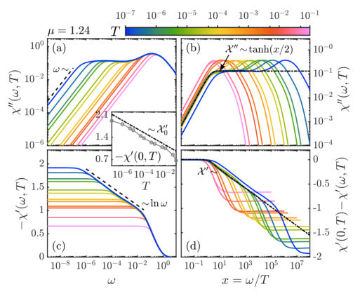
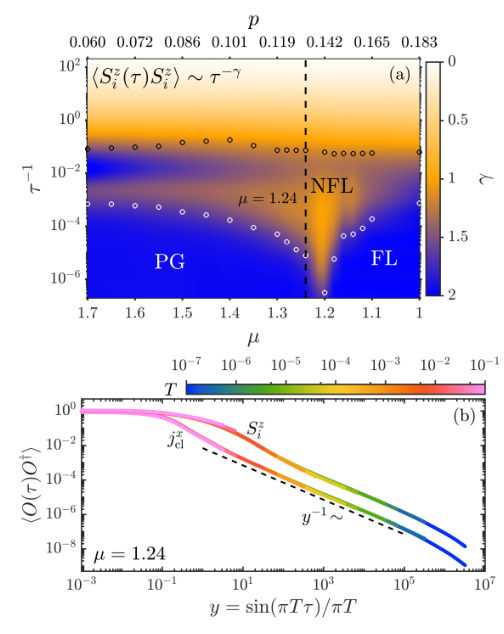
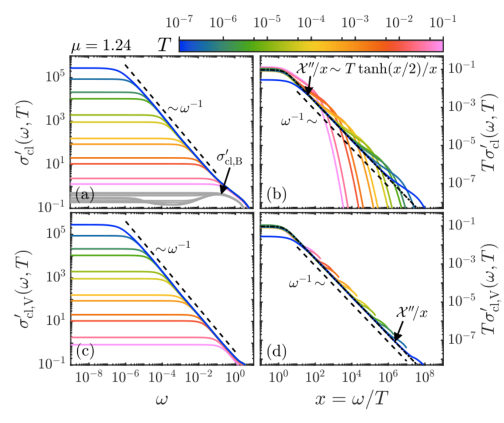
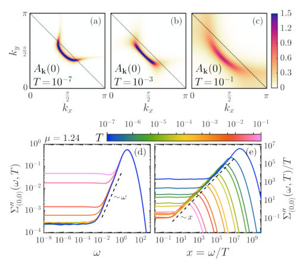
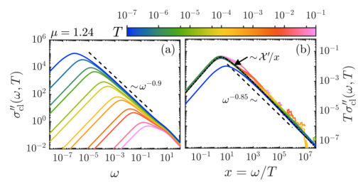
Summary. This paper uses DCA and NRG to show that the 2D Hubbard model exhibits $\omega/T$ scaling and strange-metal transport near a quantum critical point. It demonstrates that the optical response is dominated by vertex contributions and identifies Marginal Fermi Liquid behavior in the nodal regions, providing a theoretical basis for observations in cuprate superconductors.
Why it may be interesting. not directly relevant
Main problem. Investigating the dynamical scaling and the microscopic origin of the pseudogap-to-Fermi-liquid transition and the associated strange-metal behavior in the 2D Hubbard model.
Main result. The study finds $\omega/T$ scaling in spin and cluster-current susceptibilities, a dominant vertex contribution to optical conductivity leading to $1/T$ conductivity, and evidence for Marginal Fermi Liquid behavior in the nodal self-energy.
Method. Four-patch Dynamical Cluster Approximation (DCA) combined with the Numerical Renormalability Group (NRG) as a cluster impurity solver.
Model / system. A two-dimensional square-lattice $t$-$t'$-$U$ Hubbard model representing hole-doped cuprates, specifically focusing on the regime near critical doping $p^* \simeq 0.14$.
Key observables. Local spin susceptibility, cluster-current susceptibility, optical conductivity (including bubble and vertex contributions), and nodal/antinodal electronic spectral functions and self-energy.
Important parameters / regimes. Critical doping $p^* \simeq 0.14$, temperature scales $T_{FL}$ and $T_{NFL}$, and the scaling variable $x = \omega/T$.
Assumptions / limitations. The self-energy is approximated as momentum-independent within four patches; the results may require more accurate computations to solidify the MFL claim.
Figures summary. Phase diagrams showing $T=0$ transitions; scaling collapses of spin and current correlators; $\omega/T$ scaling of susceptibilities and optical conductivity; and decomposition of current-current correlations by type.
Paper structure. The paper establishes a phase diagram, identifies the non-Fermi-liquid regime, demonstrates dynamical scaling in spin and current responses, analyzes the vertex contribution to transport, and examines nodal/antinodal spectral dynamics.
We study dynamical scaling in the quantum-critical fan of the pseudogap-metal to Fermi-liquid transition of the two-dimensional Hubbard model. Using a four-patch dynamical cluster approximation with the numerical renormalization group as a cluster impurity solver, we access real-frequency dynamics over several decades at arbitrary temperatures. Close to the critical doping, the local spin and cluster-current susceptibility spectra exhibit $x=ω/T$ scaling of the form $χ''(ω,T)\sim \tanh(x/2)$, and the cluster contribution to the optical conductivity obeys $Tσ'_{\mathrm{cl}}(ω,T) \sim \tanh(x/2)/x$, implying a $1/T$ cluster dc conductivity. In the scaling regime, the vertex contribution to the cluster optical response is much larger than the bubble contribution. We further find evidence for a marginal-Fermi-liquid nodal self-energy. This, together with the $1/T$ vertex contribution to the conductivity, implies strange-metal optical transport in the quantum critical region. Our results describe several qualitative aspects of several experimental observations.
Authors: Miquel Carrasco-Codina, Pau Escofet, Paul Hilaire, Ariane Soret, Sam Nerenberg, Victor Champain, Gerard Milburn, Klara Theophilo, Sophie H. Li, Irais Bautista, Andrés Gómez, Jose Miralles, Sergi Abadal, Carmen G. Almudéver, Eduard Alarcón, Raja Yehia
Type: both · Category: quantum information and computing · PDF: https://arxiv.org/pdf/2605.15090v1
Analysis basis: full PDF text, analyzed in chunks
Topic relevance: QC/QI experiment 2/5




Summary. This paper introduces a framework to benchmark the energy efficiency of different quantum computing architectures. By analyzing the power profiles of superconducting, spin, ion, atom, and photonic platforms, it highlights the trade-offs between hardware complexity and computational throughput. The work is significant for assessing the environmental and economic sustainability of future quantum technologies.
Why it may be interesting. It provides a critical resource-based perspective on the scalability of quantum hardware, which is essential for understanding the long-term viability of large-scale quantum architectures and their integration with classical control systems.
Main problem. Quantifying the energy consumption and energy efficiency of various quantum computing platforms to determine their potential sustainability compared to classical computers.
Main result. The authors establish a standardized framework for benchmarking energy efficiency (computations per Joule) and identify that while cooling is the primary energy driver in NISQ-era devices, control electronics will likely dominate as architectures scale.
Method. The study uses a hardware-aware approach, defining efficiency as the ratio of algorithms performed to energy consumed, and incorporates platform-specific compilation models (accounting for routing and gate sets).
Model / system. The analysis covers five representative platforms: superconducting qubits, silicon spin qubits, trapped ions, neutral atoms, and photonic qubits, using power values from existing hardware components.
Key observables. Energy efficiency (computations per Joule), total power consumption (P), circuit depth (D), and number of samples (N_samples).
Important parameters / regimes. Two-qubit gate time, reset time, qubit connectivity graphs, and the ratio of two-qubit gates to total layers.
Assumptions / limitations. The model focuses on NISQ-era power consumption, excludes manufacturing/life-cycle costs, and assumes power consumption remains relatively constant between idle and active states.
Figures summary. A power breakdown chart showing the percentage of energy used by cooling, control, and classical components; and plots of energy efficiency versus circuit depth and number of possible computations over 24 hours.
Paper structure. The paper begins by defining a new energy efficiency metric, followed by a platform-by-platform analysis (solid-state, atom-based, and photonic), and concludes with a discussion on scaling, limitations, and the potential rebound effect.
How much energy does a quantum computer consume? Are they more efficient than their classical counterparts? In this work, we make a step towards answering these questions. We define the energy efficiency of a quantum computer as the ratio of the number of algorithms it can perform during a given time over the energy consumed by the hardware during this time. We analyze the most representative physical platforms currently envisioned to be used as building blocks of quantum computers: superconducting qubits, silicon spin qubits, trapped ions, neutral atoms and photonic qubits. Including insights from experts in all these technologies and taking into account algorithm compilation constraints, we discuss the advantages and inconveniences of each platform from an energy standpoint. Beyond providing concrete values of the energy consumption of current quantum computers, we lay the foundation of a framework to benchmark the energy efficiency of any future quantum computing architecture.
Authors: Luca Chirolli, Valentina Brosco, Uri Vool, Gianluigi Catelani, Luigi Amico
Type: theory · Category: quantum information and computing · PDF: https://arxiv.org/pdf/2605.14586v1
Analysis basis: full PDF text, analyzed in chunks
Topic relevance: non-equilibrium dynamics 2/5
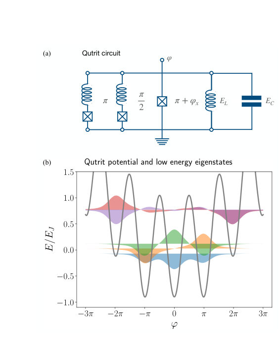
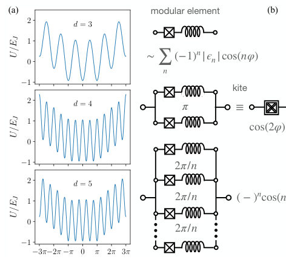
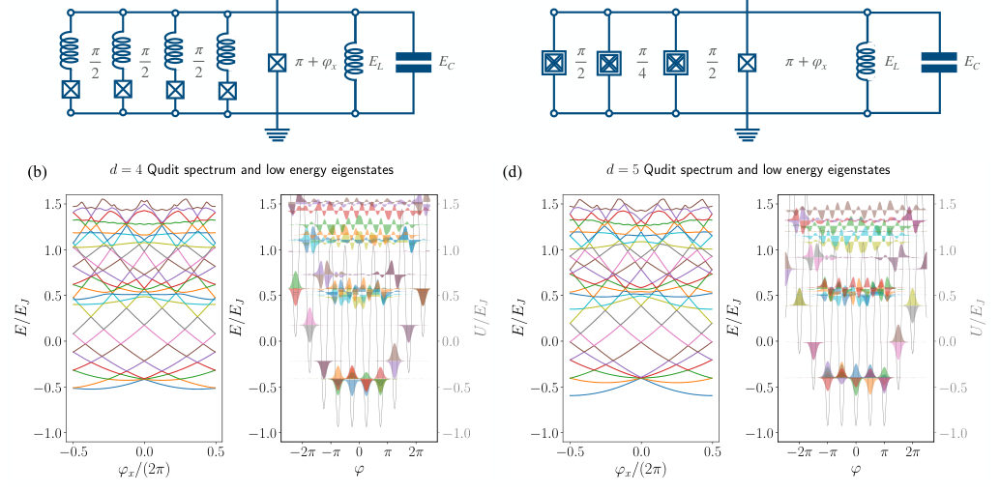
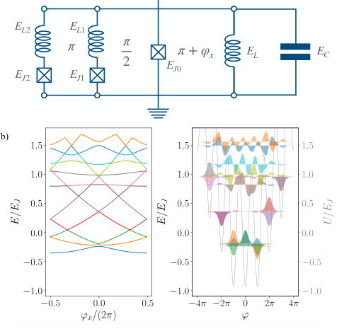
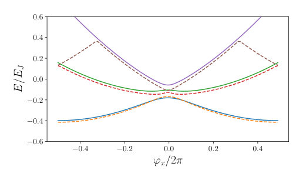
Summary. The paper proposes a new superconducting circuit called 'Fraxonium' that uses engineered Josephson potentials to create stable, multi-level quantum systems (qudits). By using fractional fluxon states, these qudits are naturally protected from leakage errors, offering a scalable path for more efficient quantum computing.
Why it may be interesting. It presents a novel way to engineer multi-level quantum systems with geometric protection, which is highly relevant for researchers working on holonomic quantum computing and controlled quantum dynamics.
Main problem. The need to expand the local Hilbert space for quantum computing using qudits (d > 2) that are protected from leakage errors, which is a major limitation in current transmon-based architectures.
Main result. The proposal of 'Fraxonium,' a superconducting circuit architecture that uses engineered multi-harmonic Josephson potentials to create d degenerate low-lying 'fraxon' states protected from leakage.
Method. Fourier engineering of the Josephson potential using a multi-harmonic approach, combined with WKB approximations for tunneling and numerical diagonalization of the Hamiltonian.
Model / system. A generalized fluxonium circuit featuring a capacitor, inductor, and a tailored Josephson element. The Hamiltonian includes a multi-harmonic potential U_d(phi) created via 'kite' building blocks.
Key observables. Energy spectrum, tunneling matrix elements, dipole matrix elements for phase and charge operators, and transition energies.
Important parameters / regimes. Energy scales EJ, EC, and EL; the regime EJ >> EC, EL; and the periodicity of the engineered potential.
Assumptions / limitations. The regime EJ >> EC, EL is assumed; higher energy excitations (plasmons) and non-nearest-neighbor tunneling are neglected; and the potential is treated as a sum of Fourier harmonics.
Figures summary. Figure 1 shows the circuit diagram and the engineered potential with low-energy eigenstates. Figure 3 displays the spectrum for a ququart system. Figure 6 and 7 show dipole matrix elements and transition energies for the qutrit system.
Paper structure. The paper introduces the qudit problem, proposes the Fraxonium architecture, details the Fourier engineering method for potential sculpting, analyzes specific d=3, 4, and 5 cases, and proposes a STIRAP protocol for gate implementation.
We propose a superconducting circuit hosting $d$ low-lying states, well separated from the rest of the spectrum, that naturally realizes a qudit system protected from leakage errors. The system represents a generalization of the fluxonium and the low-energy states are constituted by fractional fluxon states, that we call {\it fraxons}, localized in the minima of a suitably designed Josephson potential. The latter is tailored through a Fourier engineering approach, that employs multi-harmonic Josephson building block elements composed by a Josephson junction and an inductance connected in series. We present the spectrum of a $d=4$ and a $d=5$ qudit system and study in detail the qutrit case. We analyze the dipole matrix elements for coupling to radiation and propose a non-Abelian, stimulated Raman adiabatic passage (STIRAP) protocol for single-qutrit gates, that is particularly suited for the present system. The proposed platform opens novel perspectives in circuit engineering and quantum computing beyond the qubit paradigm.
Authors: Carles Martorell, Rubén Calvo, Alessia Annibale, Miguel A. Muñoz
Type: theory · Category: disordered systems and neural networks · PDF: https://arxiv.org/pdf/2605.14916v1
Analysis basis: full PDF text, analyzed in chunks
Topic relevance: Keldysh / 2PI / non-Gaussian methods 2/5
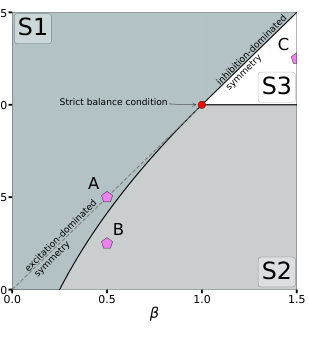
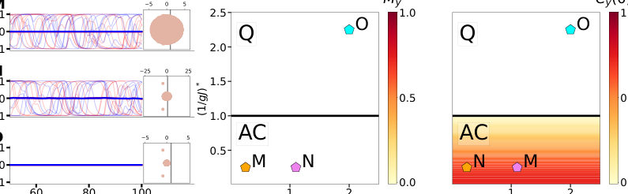
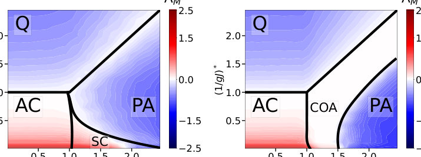
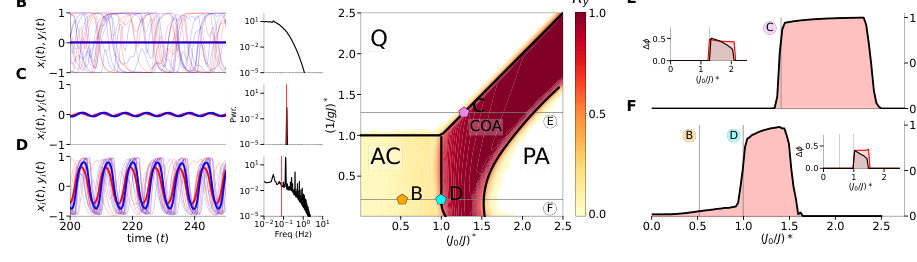
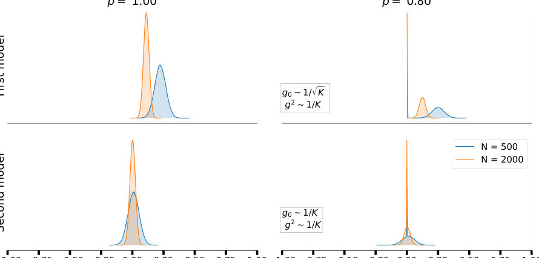
Summary. This paper extends the classic Sompolinsky-Crisanti-Sommers theory to E/I networks with structured inhibition. It demonstrates that tuning how inhibition targets different populations can fundamentally reorganize the network's phase diagram, even suppressing chaos in favor of synchronized oscillations.
Why it may be interesting. not directly relevant
Main problem. Understanding how target-specific inhibition in recurrent excitatory-inhibitory (E/I) networks regulates the emergence of macroscopic dynamical regimes like asynchronous chaos, persistent activity, and coherent oscillations.
Main result. The study identifies three distinct classes of phase diagrams based on inhibitory coupling, showing that target-specific inhibition can suppress chaotic fluctuations and drive the system into coherent oscillatory activity.
Method. The authors use Dynamical Mean-Field Theory (DMFT) and the Martin-Siggia-Rose-De Dominicis-Janssen formalism to derive self-consistent equations for macroscopic observables and perform linear stability analysis.
Model / system. A two-population recurrent neural network consisting of segregated excitatory and inhibitory neurons with sparse, asymmetric Gaussian connectivity and target-specific inhibitory couplings.
Key observables. Mean activities, two-time autocorrelation functions, Largest Lyapunov Exponent (LLE), Kuramoto order parameter, and phase lag between populations.
Important parameters / regimes. Target-specific inhibition parameters (beta and delta), coupling strength (g), connectivity mean (J0) and variance (J2), and the fraction of excitatory neurons (f).
Assumptions / limitations. The analysis is performed in the thermodynamic limit (N to infinity), assumes a tanh activation function, and uses a sparse connectivity construction to preserve Dale's principle.
Figures summary. Figures show phase diagrams and heat maps of mean activity and autocorrelation, trajectories of E/I activity, eigenvalue spectra, and the Largest Lyapunov Exponent across parameter spaces.
Paper structure. The paper introduces the E/I network model, develops the DMFT framework for sparse networks, classifies phase diagrams based on inhibitory parameters, analyzes stability transitions (Type I and II), and validates results with numerical simulations.
Biological neural networks can operate in qualitatively distinct dynamical regimes, and transitions between these regimes are thought to underlie changes in computation and behavior. The seminal work of Sompolinsky, Crisanti, and Sommers (SCS) showed that random recurrent networks undergo a transition from quiescence to asynchronous chaos, establishing a paradigmatic link between random connectivity, dynamical instability, and internally generated fluctuations in neural circuits. Here, we extend this framework to two-population firing-rate networks with segregated excitatory and inhibitory neurons and target-specific inhibitory couplings that break excitation--inhibition balance. Using dynamical mean-field theory, we derive self-consistent equations for the macroscopic mean activities and autocorrelations, together with stability criteria distinguishing mean-driven and fluctuation-driven instabilities. We show that target-specific inhibition organizes the phase diagram into three qualitative classes: inhibition-dominated or strictly balanced networks display only quiescent activity and asynchronous chaos; excitation-dominated networks display persistent activity together with either synchronous chaos with non-vanishing mean activity or coherent oscillations, depending on the stability-matrix eigenvalues. Crucially, coherent oscillations do not coexist with chaotic fluctuations around the periodic mean trajectory; rather, their onset suppresses the chaotic component, reminiscent of input-induced suppression of chaos. These results generalize SCS theory to recurrent networks with explicit excitatory--inhibitory structure and identify target-specific inhibition as a key control parameter for large-scale neural dynamics.
Authors: Jacob Higer, Barak Hirshberg
Type: theory · Category: numerical methods · PDF: https://arxiv.org/pdf/2605.14687v1
Analysis basis: full PDF text, analyzed in chunks
Topic relevance: analog quantum simulation 2/5
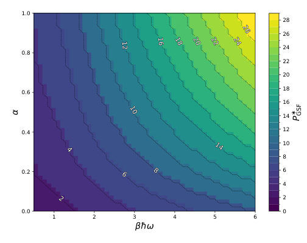
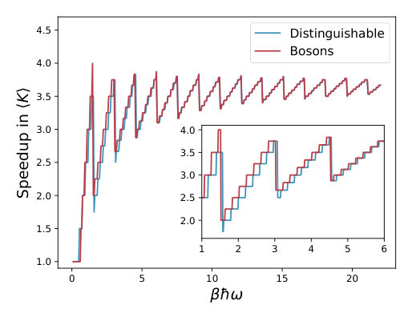
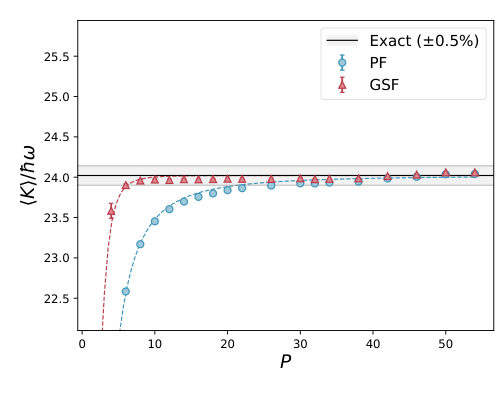
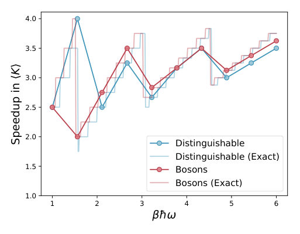

Summary. This paper demonstrates that the fourth-order Generalized Suzuki-Chin Factorization can be applied to bosonic and fermionic Path Integral Molecular Dynamics. By using a re-weighting technique, the method achieves significantly faster convergence of energy estimators with respect to the number of beads. This allows for more efficient simulations of quantum statistics in trapped particle systems.
Why it may be interesting. This provides a highly efficient numerical tool for simulating the thermodynamic properties of ultracold quantum gases and many-body bosonic/fermionic systems without increasing the complexity of the underlying sampling algorithm.
Main problem. The need to accelerate the convergence of Path Integral Molecular Dynamics (PIMD) simulations for indistinguishable particles (bosons and fermions) as the number of imaginary-time beads increases.
Main result. The Generalized Suzuki-Chin Factorization (GSF) can be successfully integrated into bosonic PIMD, providing a 2-4x speedup in convergence with respect to the Trotter number with only modest computational cost.
Method. The authors implement the fourth-order GSF scheme as a re-weighting factor for observables, allowing the use of standard second-order primitive factorization for sampling.
Model / system. The study focuses on non-interacting indistinguishable particles (bosons and fermions) in harmonic traps and sinusoidal potentials, modeled via ring polymers in a discretized path integral framework.
Key observables. Kinetic energy, potential energy, total energy, radial distribution functions, and the fermionic sign/weight.
Important parameters / regimes. Trotter number (P), inverse temperature (beta), tuning parameter (alpha), and particle number (N).
Assumptions / limitations. The re-weighting efficiency may decrease at very low Trotter numbers due to lack of overlap between distributions; the analytical derivations are specific to harmonic potentials.
Figures summary. Figures show the number of beads required for convergence, the speedup of GSF over PF as a function of temperature, and the stability of the fermionic sign under GSF re-weighting.
Paper structure. The paper introduces the GSF implementation for bosons, demonstrates its efficiency through convergence tests in harmonic and sinusoidal potentials, provides analytical derivations for exact partition functions using polynomial theory, and evaluates its performance for fermionic systems.
Modern implementations of path integral molecular dynamics (PIMD) simulations of distinguishable particles frequently make use of high order factorization schemes for the Boltzmann operator to expedite convergence of equilibrium averages. Among these methods is the generalized Suzuki-Chin factorization (GSF), which is accurate up to fourth order in the imaginary-time step. In this work, we show that the GSF decomposition of the Boltzmann operator is applicable to bosonic PIMD, and results in an improved convergence of estimators. In particular, we show that the recently developed quadratic scaling bosonic PIMD need not change when using the GSF. The GSF scheme is implemented as a re-weighting factor for observables, without affecting the sampling generated by the standard, second-order, primitive factorization. We study the effect of this factorization for bosons in a harmonic trap and a sinusoidal potential. We also assess the effectiveness of GSF in calculating fermionic expectation values for harmonically-trapped atoms. In all these cases, we find that the GSF speeds up convergence with the Trotter number by a factor of $\sim 2-4$ across a wide temperature range, at only a modest computational cost.
Authors: Mahad Mohtashim, Nouhaila Innan, Muhammad Shafique
Type: both · Category: quantum information and computing · PDF: https://arxiv.org/pdf/2605.14523v1
Analysis basis: full PDF text, analyzed in chunks
Topic relevance: methods for driven-dissipative 2/5
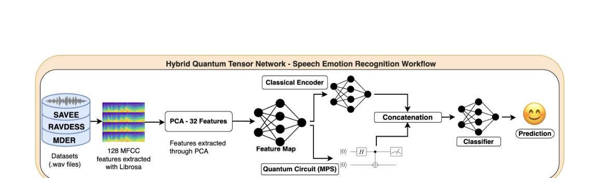
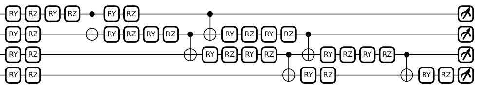
Summary. This paper introduces a hybrid quantum-classical framework for speech emotion recognition that uses a Matrix Product State (MPS) inspired quantum circuit. By using a structured tensor network approach, the model efficiently captures correlations in acoustic features using very few qubits and remains robust to simulated hardware noise. It provides a scalable, hardware-aware design for applying quantum machine learning to complex signal processing tasks.
Why it may be interesting. not directly relevant
Main problem. Speech Emotion Recognition (SER) is fragile in real-world conditions due to subtle cues and high parameter requirements of classical models, while existing quantum machine learning approaches lack the architectural inductive bias needed to model correlated acoustic features.
Main result. The HQTN-SER framework achieves high accuracy (up to 80.12% on RAVDESS) and demonstrates significant robustness to hardware noise, showing that MPS-inspired quantum circuits can effectively model speech correlations with very low qubit counts.
Method. A hybrid quantum-classical pipeline using PCA for dimensionality reduction, an MPS-inspired variational quantum circuit for feature extraction, and a fusion strategy that combines quantum measurement statistics with classical latent embeddings.
Model / system. A hybrid quantum-classical model utilizing a 1D chain of 3 to 4 qubits with an MPS-style architecture featuring angle encoding (Ry rotations), parameterized Ry and Rz gates, and nearest-neighbor CNOT entanglement.
Key observables. Expectation values of single-qubit Z operators.
Important parameters / regimes. Small qubit counts (n=3, 4), shallow circuit depth, and 32-dimensional PCA-compressed input features.
Assumptions / limitations. The study assumes that the structured connectivity of a tensor network can act as a sufficient inductive bias for speech features and does not claim unconditional quantum advantage.
Figures summary. Figure 1 shows the HQTN-SER workflow; Figure 2 details the MPS-structured variational circuit; Figures 3-5 display training/validation loss and accuracy curves across datasets.
Paper structure. The paper introduces the problem of SER fragility, proposes the HQTN-SER framework, details the MPS-inspired architecture and fusion strategy, presents experimental results on three datasets, performs ablation and hardware-noise studies, and concludes with future directions.
Speech emotion recognition (SER) remains fragile in real-world conditions because emotional cues are subtle, speaker-dependent, and easily confounded by recording variability, while high-performing deep models typically rely on large and carefully curated training sets. Quantum machine learning offers an alternative way to introduce nonlinear correlation modeling with compact modules, yet existing quantum SER studies remain limited and the impact of circuit structure is not well understood. This paper presents HQTN-SER, a hybrid quantum-classical framework that investigates how quantum tensor network connectivity can support SER under small-qubit settings. HQTN-SER introduces (i) an MPS-inspired quantum tensor network module that enforces structured interactions to model correlations in speech representations with a small number of trainable parameters, and (ii) a fusion strategy that combines quantum measurement features with a learned classical latent embedding for end-to-end emotion classification. We evaluate HQTN-SER on three public benchmarks (RAVDESS, SAVEE, and MDER) under a unified preprocessing and training protocol. The proposed model achieves consistent performance across datasets, RAVDESS = 80.12%, SAVEE = 78.26% and MDER = 73.51% accuracy, with stable convergence and low qubit counts, showing that tensor network structure can be an effective and hardware-aware design choice for quantum-assisted SER. The results provide a reproducible baseline and clarify when structured quantum modules can add value to affective computing today.
Authors: Ricardo Peredo-Ortiz, Edilio Lázaro-Lázaro, Magdaleno Medina-Noyola, Luis Fernando Elizondo-Aguilera
Type: theory · Category: statistical mechanics · PDF: https://arxiv.org/pdf/2605.14064v1
Analysis basis: full PDF text, analyzed in chunks
Topic relevance: non-equilibrium dynamics 2/5
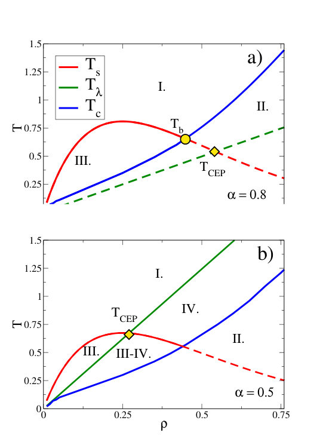
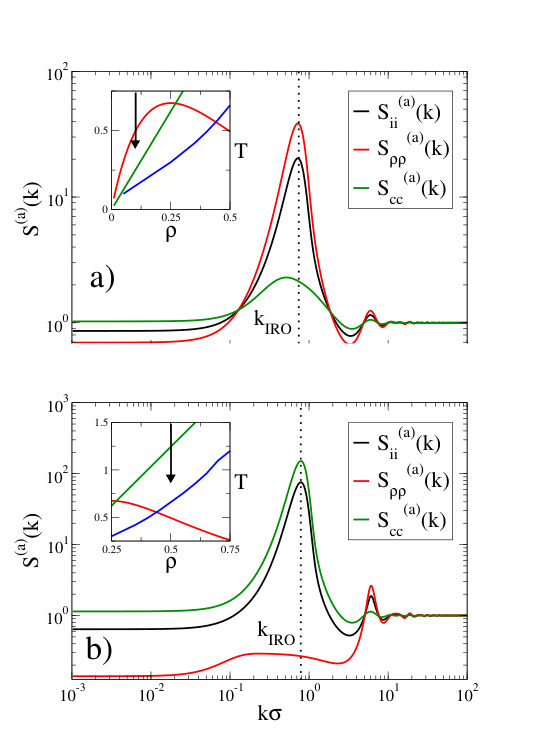
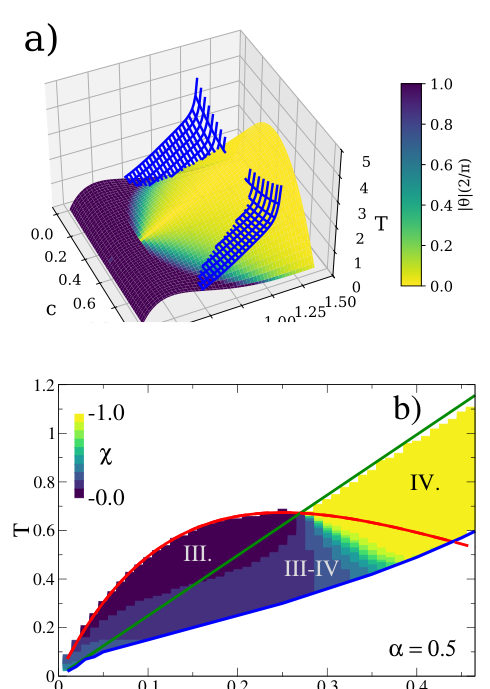
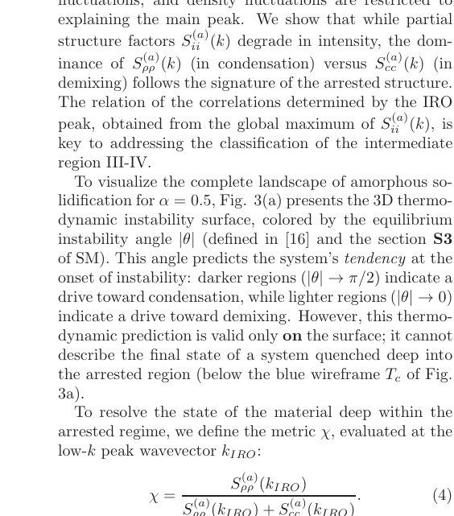
Summary. This paper provides a unified non-equilibrium description of symmetric binary mixtures by exploring how the competition between different energy scales dictates the interplay between phase separation and glass formation. It introduces a new structural metric to distinguish between gels formed by density fluctuations versus those formed by concentration fluctuations. This work is significant for understanding the complex phase behavior of soft matter systems like colloids and proteins.
Why it may be interesting. not directly relevant
Main problem. The study addresses the inadequacy of equilibrium phase diagrams to describe soft-matter mixtures where kinetic barriers and dynamical arrest prevent equilibrium, specifically investigating the competition between thermodynamic instabilities and kinetic arrest.
Main result. The authors demonstrate that energy-scale competition (alpha) partitions the phase diagram into distinct kinetic regimes, and introduce a structural order parameter (chi) to resolve 'structural blindness' in distinguishing condensation-driven from demixing-driven arrested states.
Method. The study utilizes the Non-Equilibrium Self-Consistent Generalized Langevin Equation (NESCGLE) theory and a number-concentration formalism to analyze structural relaxation and stability.
Model / system. Symmetric binary mixtures (SBM) of particles with equal diameters using a Hard-Sphere plus Square-Well (HSSW) interaction potential.
Key observables. Partial structure factors (Sii), density fluctuations (Srho-rho), concentration fluctuations (Scc), localization length (gamma), and the structural order parameter (chi).
Important parameters / regimes. Energy-scale ratio (alpha) of cross-species to self-species attraction, density (rho), temperature (T), and concentration (c).
Assumptions / limitations. The direct correlation functions are approximated using the Ornstein-Zernike Equation with a closure relation, and the attractive tail is treated as a perturbative term.
Figures summary. Figures illustrate the classification of kinetic regimes (Type I-IV) based on alpha, the resolution of structural blindness using density/concentration fluctuations, and the evolution of instability surfaces (spinodal and lambda-lines).
Paper structure. The paper moves from defining the problem of incomplete phase diagrams to establishing a theoretical framework (NESCGLE), classifying topological regimes via energy-scale competition, and finally introducing a structural metric to distinguish between different types of arrested states.
The equilibrium behavior of binary mixtures can be understood through the competition of energy scales, which classifies their corresponding phase diagrams into distinct topological regimes (Types I-IV). However, in many soft-matter mixtures, strong competing interactions and kinetic barriers often promote dynamical arrest, disrupting the formation of equilibrium and metastable states, and thus rendering conventional phase diagrams incomplete. Here we extend the description and classification of binary systems inside regions of thermodynamical instability. Specifically, we discuss how the interplay between two kind of instabilities and kinetic arrest generates a variety of amorphous states driven by different underlying mechanisms. For strong cross-attraction, for example, dynamical arrest suppresses demixing, whereas in competitive regimes, a mixture may display either condensation-driven or demixing-induced arrested states. The crossover between these regimes can be described by a structural order parameter $χ$, providing a unified non-equilibrium description that reconciles theoretical predictions with experimentally observed arrested states.
Authors: Rui Wen, Kansei Inamura, Sakura Schafer-Nameki
Type: theory · Category: strongly correlated electrons · PDF: https://arxiv.org/pdf/2605.15194v1
Analysis basis: full PDF text, analyzed in chunks
Topic relevance: entanglement & information structure 2/5
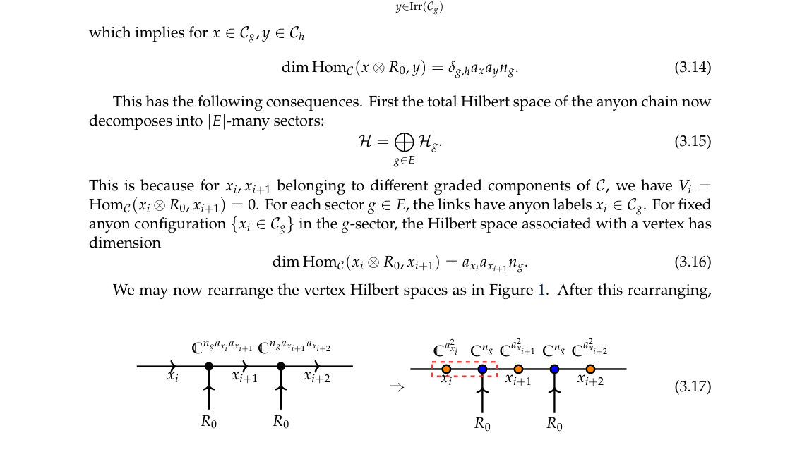
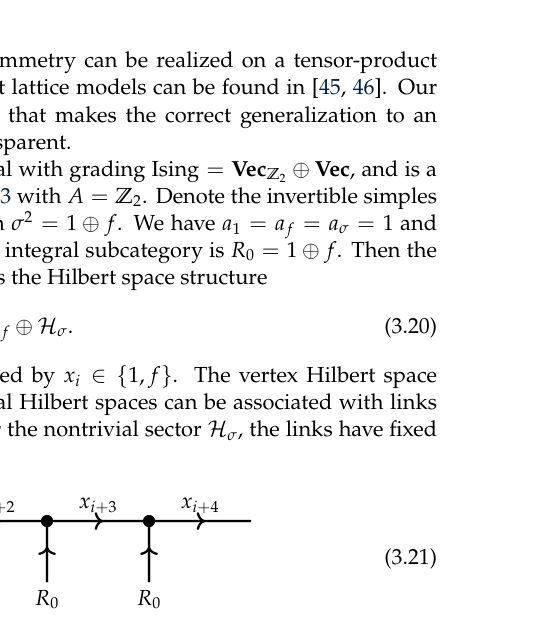
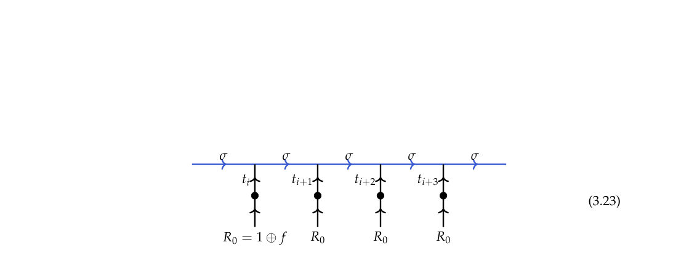
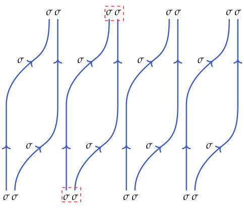
Summary. The paper establishes that any weakly integral fusion category can be realized as a symmetry on a 1D tensor-product Hilbert space when allowing for Quantum Cellular Automata refinements. It provides a systematic way to calculate the indices of these symmetries and demonstrates the construction using anyon chains.
Why it may be interesting. This work provides a fundamental link between abstract algebraic structures (fusion categories) and concrete lattice models, which is essential for understanding the classification of non-invertible symmetries in many-body dynamics and topological phases.
Main problem. Investigating the realizability of (1+1)-dimensional fusion category symmetries on tensor-product Hilbert spaces, specifically addressing how Quantum Cellular Automata (QCAs) refine these realizations.
Main result. The authors prove that any weakly integral fusion category admits a QCA-refined realization on a tensor-product Hilbert space and show that the indices of the symmetry operators and QCAs are uniquely determined by the categorical data.
Method. The study uses fusion category theory, diagrammatic calculus, and the construction of anyon chain models to analyze the relationship between non-invertible symmetries and GNVW indices.
Model / system. The paper focuses on (1+1)-dimensional quantum many-body systems, specifically 1D spin chains and anyon chains with tensor-product Hilbert spaces and finite-dimensional on-site degrees of freedom.
Key observables. Quantum dimensions, GNVW indices, left and right defect dimensions, and the index of Quantum Cellular Automata.
Important parameters / regimes. Weak integrality of the fusion category, grading group E, and the lattice quantum dimension.
Assumptions / limitations. The proof relies on five physical assumptions regarding the locality of defects, the behavior of symmetry compositions, and the homogeneity of the index.
Figures summary. Figures illustrate the rearrangement of local Hilbert spaces in anyon chains, the structure of the Ising category sector, and the sequential circuits used to map different Hilbert space sectors.
Paper structure. The paper begins by investigating constraints on QCA-refined realizations, moves to a general construction of lattice models for weakly integral categories, and concludes with specific applications to Tambara-Yamagami and Metaplectic categories.
We investigate realizations of (1+1)-dimensional fusion category symmetries on tensor-product Hilbert spaces, allowing for mixing with quantum cellular automata (QCAs). It was argued recently that any such realizable symmetry must be weakly integral. We develop a systematic analysis of QCA-refined realizations of fusion categories and prove two statements. First, we show that, under certain physical assumptions on defects, any QCA-refined realization has QCA and symmetry-operator indices determined by the categorical data, up to the freedom of redefining the symmetry operators. Second, we construct a lattice model that provides a QCA-refined realization for any weakly integral fusion category symmetry on a tensor product Hilbert space. We also compute indices of the QCAs in our lattice model and show agreement with the first result. As an application of the general construction, we give an explicit QCA-refined realization of general Tambara-Yamagami categorical symmetries.
Authors: Zheyuan Liu, Hodaka Kikuchi, Zijun Wei, Shinichiro Asai, Mechthild Enderle, Ursula B. Hansen, Vasile O. Garlea, Manh D. Le, Gøran J. Nilsen, Igor A. Zaliznyak, Takatsugu Masuda
Type: experiment · Category: strongly correlated electrons · PDF: https://arxiv.org/pdf/2605.14124v1
Analysis basis: full PDF text, analyzed in chunks
Topic relevance: spintronics-quantum-optics interface 2/5
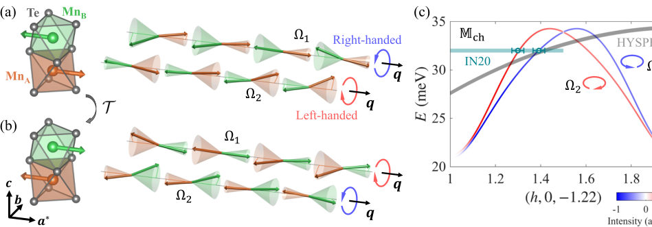
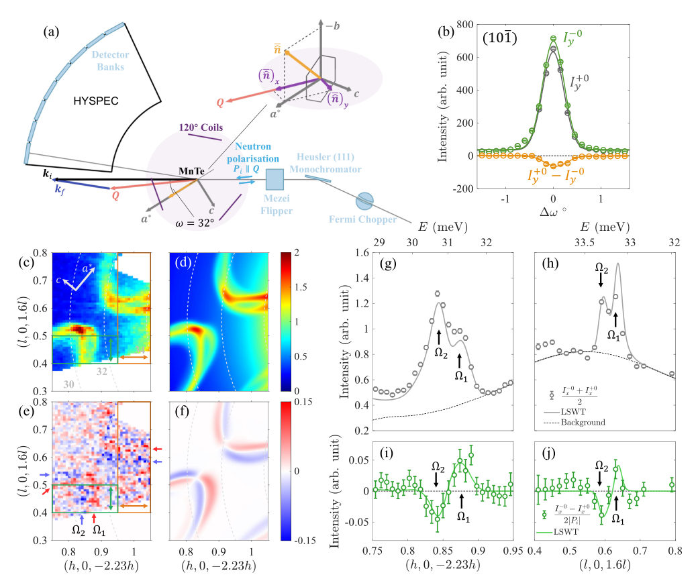
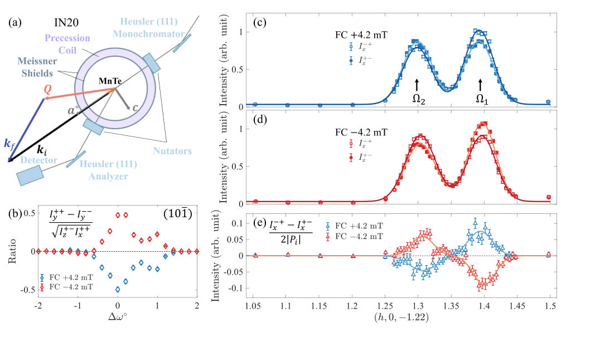
Summary. This paper provides the first direct experimental observation of switchable chiral magnons in the altermagnet MnTe. By using polarized neutron scattering, the authors show that the handedness of spin waves can be controlled by magnetic field cooling, providing a foundation for future altermagnetic spintronic devices.
Why it may be interesting. not directly relevant
Main problem. The researchers aimed to experimentally verify the existence of chiral magnons in altermagnets, which are a predicted but previously unobserved hallmark of the altermagnetic state arising from non-relativistic exchange.
Main result. The study directly observed chiral magnons in the altermagnet MnTe and demonstrated that their chirality can be reversibly switched using a magnetic-field cooling process.
Method. The team used polarized inelastic neutron scattering (PINS) on the HYSPEC and IN20 spectrometers, combined with polarized neutron diffraction (PND) to control and measure domain imbalance.
Model / system. The physical system is MnTe, a prototypical altermagnet with a collinear magnetic structure and $g$-wave spin symmetry, featuring two opposite-spin sublattices.
Key observables. Chiral magnon signal (Mch), symmetric structure factor (S(Q, E)), magnon band splitting, and the Néel vector component (n_x).
Important parameters / regimes. Magnetic-field cooling (FC) through the Neel temperature (TN = 307 K) using fields of approximately +/- 4.2 mT.
Assumptions / limitations. The observed chirality is attributed to an imbalanced multi-domain state rather than a weak ferromagnetic moment.
Figures summary. Fig 1 shows the crystal and magnetic structure; Fig 2 displays 1D cuts of the neutron structure factor showing split magnon peaks and opposite chirality; Fig 3 details the experimental setup and the sign reversal of the chiral signal after field cooling.
Paper structure. The paper introduces the concept of altermagnetic chiral magnons, describes the experimental setup and MnTe crystal properties, presents the observation of magnon splitting and chirality via neutron scattering, demonstrates the switchability of chirality via field cooling, and concludes by ruling out alternative ferromagnetic origins.
Chiral magnons, the quanta of handed spin waves, transport spin angular momentum without energy loss due to Joule heating. The recently discovered altermagnets were proposed to host chiral magnons arising from a non-relativistic exchange mechanism, similar to that in ferromagnets but without net magnetization, offering a stray-field-free platform for efficient magnon spin-current manipulation. In this work, we directly observed chiral magnons in the altermagnetic prototype MnTe using polarized inelastic neutron scattering. Furthermore, the magnon chirality was found to be reversibly switched by magnetic-field control, establishing a robust foundation for functional altermagnetic magnonics.
Authors: Zihao Li, Ji Guan, Mingsheng Ying
Type: theory · Category: quantum information and computing · PDF: https://arxiv.org/pdf/2605.14881v1
Analysis basis: full PDF text, analyzed in chunks
Topic relevance: quantum measurements 2/5
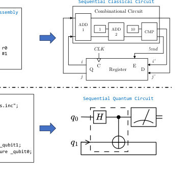
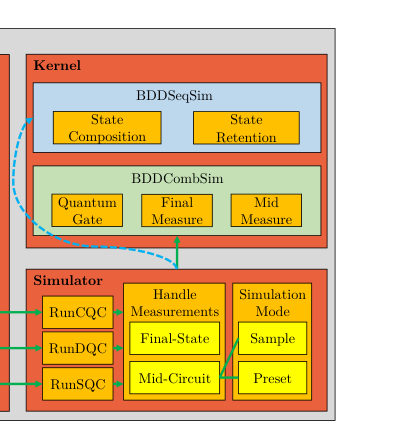
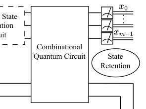
Summary. QSeqSim is a new symbolic simulator for Qiskit that enables the execution of quantum programs containing while-loops. By using BDDs and weighted model counting, it can efficiently simulate complex iterative protocols like quantum random walks with thousands of qubits.
Why it may be interesting. not directly relevant
Main problem. Current Qiskit-native tools lack the ability to simulate quantum programs containing 'while-loop' constructs and mid-circuit measurements with feedback.
Main result. The development of QSeqSim, a symbolic simulator that successfully scales to large-scale sequential circuits, including quantum random walks with over 1000 qubits.
Method. The tool uses a Binary Decision Diagram (BDD)-based symbolic representation and weighted model counting to execute sequential quantum circuits (SQCs) by modeling loops as processes with state composition and retention.
Model / system. The framework models Qiskit while-loops as Sequential Quantum Circuits (SQCs) composed of combinational, dynamic, and sequential components with explicit internal and external qubits.
Key observables. Quantum state reachability, measurement outcome reachability, and global path probability.
Important parameters / regimes. Number of qubits, loop depth (iterations), gate density, and mid-circuit measurement count.
Assumptions / limitations. All unitaries must be decomposable into the Clifford+T gate set, and the external register is assumed to be prepared in a computational basis state.
Figures summary. Figure 1 compares classical and quantum loop hierarchies; Figure 2 shows the QSeqSim architecture; Figure 3 illustrates a single SQC iteration; Figure 4 demonstrates an RUS protocol implementation.
Paper structure. The paper introduces the simulation gap, defines the SQC mathematical model, details the QSeqSim architecture and BDD-based kernel, provides formal proofs for the soundness of state composition and retention, and concludes with scalability benchmarks.
We present a tool QSeqSim, a Qiskit-integrated symbolic backend that fills the current gap of having no Qiskit-native support for simulating while-loop quantum programs and their induced sequential quantum circuits. QSeqSim takes Qiskit QuantumCircuit objects, translates them into OpenQASM 3 code, and organises the resulting program into a combination of combinational, dynamic, and sequential circuits, thereby assigning while-loops a precise sequential circuit semantics with explicit internal and external qubits. Building on this semantics, QSeqSim adopts a Binary Decision Diagram (BDD)-based symbolic representation and integrates weighted model counting to compute measurement probabilities efficiently by exploiting sharing in structured and sparse BDDs. On top of this Boolean backbone, it introduces dedicated symbolic operators for state composition and state retention, thereby enabling efficient symbolic execution of sequential quantum circuits. Our experiments demonstrate that QSeqSim scales to substantial while-induced sequential circuits; in particular, in the quantum random walk benchmark we successfully simulate circuits with over 1000 qubits for more than 10 loop iterations. QSeqSim is available at https://github.com/Veri-Q/QSeqSim.
Authors: Simranjeet Singh Dahia, Claudia Szabo
Type: both · Category: quantum information and computing · PDF: https://arxiv.org/pdf/2605.14235v1
Analysis basis: full PDF text, analyzed in chunks
Topic relevance: entanglement & information structure 2/5
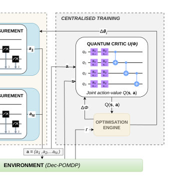
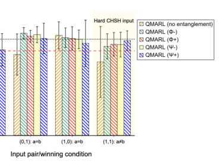

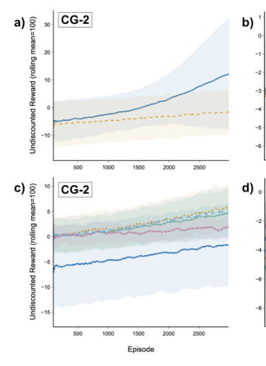
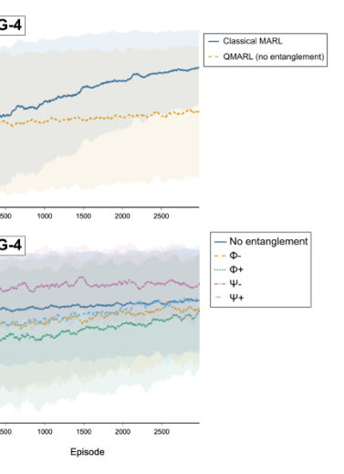
Summary. This paper explores the use of quantum entanglement to enable coordination between independent agents in reinforcement learning. It proves that entanglement allows agents to break classical performance bounds in specific games, while also identifying that quantum circuit expressiveness can drive advantages in other navigation tasks.
Why it may be interesting. not directly relevant
Main problem. Investigating whether quantum entanglement can serve as a coordination mechanism in Multi-Agent Reinforcement Learning (MARL) and distinguishing genuine quantum advantage from mere increases in model capacity.
Main result. The study demonstrates that entangled agents can exceed classical performance limits in the CHSH game by approaching the Tsirelson limit, while in navigation tasks, the advantage stems from VQC expressiveness and hybrid architectures rather than entanglement.
Method. The authors use a Centralized Training with Decentralized Execution (CTDE) framework, comparing classical MAA2C, unentangled QMARL, and entangled QMARL using Variational Quantum Circuits (VQCs) across various benchmarks.
Model / system. The model utilizes Variational Quantum Circuits (VQCs) as policy networks for agents, employing Bell and GHZ states for entanglement, and is tested in the CHSH game, CoinGame, and Cooperative Navigation (CoopNav) environments.
Key observables. Win rates in CHSH, expected total discounted reward, success rate, collision count, and episode length.
Important parameters / regimes. Tsirelson limit (0.854), classical CHSH ceiling (0.75), qubit count (n_q), circuit depth (d), and entropy regularization coefficient (beta).
Assumptions / limitations. Agents are cooperative and operate under strictly decentralized execution without runtime communication; simulations are conducted in a noiseless statevector environment.
Figures summary. Figure 1 shows the QMARL CTDE framework; Figure 3 compares performance in CoinGame; Figure 4 shows CoopNav success rates and collisions; Figure 7 illustrates win rates approaching the Tsirelson bound; Figure 8 shows qubit/depth ablation studies.
Paper structure. The paper introduces the QMARL framework, defines the quantum and classical architectures, details the experimental environments (CHSH, CoinGame, CoopNav), presents results for entanglement-based coordination and VQC expressiveness, performs ablation studies on circuit parameters, and concludes with a parameter-parity analysis.
We present an empirical evaluation of quantum entanglement in agent coordination within quantum multi agent reinforcement learning (QMARL). While QMARL has attracted growing interest recently, most prior work evaluates quantum policies without provable baselines, making it impossible to rigorously distinguish quantum advantage from algorithmic coincidence. We address this directly by evaluating a decentralized QMARL framework with variational quantum circuit (VQC) actors with shared entangled states. In the CHSH game, which has a mathematically proven classical performance ceiling of 0.75 win rate, we show that entangled QMARL agents approach the Tsirelson limit of 0.854, providing clear evidence of their quantum advantage. We show that unentangled quantum circuits match the classical baseline, confirming that entanglement and not the quantum circuit itself is the active coordination mechanism. We also explore the effect of specific entanglement structures, as some Bell states enable coordination gains while others actively harm performance. On cooperative navigation (CoopNav), QMARL without entanglement achieves $\sim2\times$ improvement in success rate over classical MAA2C ($\sim$0.85 versus $\sim$0.40), with the hybrid configuration, quantum actor paired with a classical centralised critic, outperforming both fully classical and fully quantum solutions. We present our experimental analysis and discuss future work.
Authors: Nabil Iqbal, T. Anderson Keller, Yue Song, Takeru Miyato, Max Welling
Type: both · Category: disordered systems and neural networks · PDF: https://arxiv.org/pdf/2605.14685v1
Analysis basis: full PDF text, analyzed in chunks
Topic relevance: Keldysh / 2PI / non-Gaussian methods 2/5
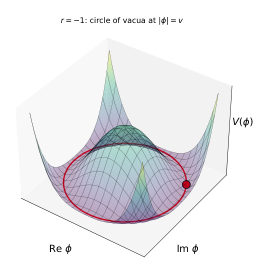
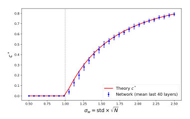
Summary. This paper proposes using the physics of spontaneous symmetry breaking as a mechanism for information propagation in neural networks. By using equivariant architectures, the authors show that 'Goldstone-like' modes protect signal integrity across many layers or time steps, effectively replacing the need for architectural stabilizers like skip connections.
Why it may be interesting. not directly relevant
Main problem. Investigating how spontaneous symmetry breaking and the resulting Goldstone modes can enable stable, long-distance information propagation and prevent signal collapse in deep and recurrent neural networks.
Main result. The authors demonstrate that in the symmetry-broken phase, equivariant networks possess a protected component of the Jacobian that remains O(1) regardless of depth, enabling improved trainability and long-term memory without traditional stabilizers like residual connections.
Method. The study uses mean-field theory, stochastic path integrals, and the replica method in the large-N limit to analytically derive activation dynamics, complemented by empirical testing on tasks like Fashion-MNIST and variable-delay copy tasks.
Model / system. The models consist of deep feedforward and recurrent neural networks (RNNs, GRUs) with internal layers that are equivariant under continuous symmetry groups such as U(1) or O(k).
Key observables. Order parameter (c_l), Jacobian magnitude and its protected component, effective rank of representations, and vorticity/winding numbers in 2D convolutional models.
Important parameters / regimes. Weight variance (sigma_W), symmetry dimension (k), network depth (L), and recurrent delay length (T).
Assumptions / limitations. The analysis assumes the large-N limit for mean-field derivations and that the tasks being performed do not necessarily possess the underlying symmetry.
Figures summary. Figures illustrate the potential energy landscape of symmetry breaking, the phase transition in activation variance, the stability of the Jacobian component in the SSB phase, and the emergence of topological vortices in 2D convolutional RNNs.
Paper structure. The paper introduces the physical analogy of Goldstone modes, provides an analytical mean-field derivation of the symmetry-breaking phase transition, presents empirical evidence for improved information propagation in deep and recurrent architectures, and concludes with observations of topological defects.
In physical systems, whenever a continuous symmetry is spontaneously broken, the system possesses excitations called Goldstone modes, which allow coherent information propagation over long distances and times. In this work, we study deep neural networks whose internal layers are equivariant under a continuous symmetry and may therefore support analogous Goldstone-like degrees of freedom. We demonstrate, both analytically and empirically, that these degrees of freedom enable coherent signal propagation across depth and recurrent iterations, providing a mechanism for stable information flow without relying on architectural stabilizers such as residual connections or normalization. In feedforward networks, this results in improved trainability and representational diversity across layers. In recurrent settings, we demonstrate the same mechanism is valuable for long-term memory by propagating information over recurrent iterations, thereby improving performance of RNNs and GRUs on long-sequence modeling tasks.
Authors: Zhenyuan Huang, Kun Wang, Ping Xu
Type: theory · Category: quantum information and computing · PDF: https://arxiv.org/pdf/2605.14256v1
Analysis basis: full PDF text, analyzed in chunks
Topic relevance: quantum measurements 2/5
Summary. This paper provides new rigorous upper bounds on the number of measurements needed to estimate the overlap of two remote quantum states. It identifies shared randomness as a critical resource and shows that while entanglement can increase certain variance terms, the overall complexity is dominated by the scaling of the measurement ensemble.
Why it may be interesting. not directly relevant
Main problem. Establishing rigorous worst-case sample complexity bounds for Distributed Inner Product Estimation (DIPE) using local randomized measurements.
Main result. The paper proves a worst-case sample complexity of O(sqrt(4.5^n)) for Clifford sampling and conjectures a sharper scaling of O(sqrt(3.6^n)) for Haar sampling, while showing that independent Pauli shadows scale worse at O(sqrt(7.5^n)).
Method. The authors use variance decomposition, symmetry reduction to Hamming-distance kernels, and mathematical tools like Clifford commutants and local twirling identities to bound the estimator's variance.
Model / system. A distributed quantum system where two remote parties, Alice and Bob, possess unknown n-qubit states and perform local randomized measurements (Clifford, Haar, or Pauli shadows) using shared or independent randomness.
Key observables. The Hilbert-Schmidt inner product Tr[rho sigma].
Important parameters / regimes. Number of qubits (n), number of unitary samples (N_U), number of shots per sample (N_M), and error/confidence parameters (epsilon, delta).
Assumptions / limitations. The analysis assumes the single-qubit Clifford group acts as an exact unitary 3-design and that the kernel optimization is covariant under qubit permutations and local bit-flips.
Figures summary. Figure 1 shows the rigidity of the Clifford ensemble versus the entanglement sensitivity of the Haar ensemble; Figure 2 and 3 illustrate how moment coefficients scale with entanglement and purity deformation.
Paper structure. The paper begins with kernel optimization and uniqueness proofs, followed by variance decomposition and the derivation of Clifford and Haar complexity bounds, then explores the impact of entanglement and purity on these bounds, and concludes with numerical verification of conjectures.
We study distributed inner product estimation for $n$-qubit states using local randomized measurements, for which rigorous worst-case guarantees are less understood. We first reduce the minimax kernel optimization to Hamming-distance kernels. Within this class, unbiasedness fixes a unique kernel. For this kernel under local Clifford sampling, we prove a sharp fourth-moment bound using the single-qubit Clifford commutant. This yields worst-case sample complexity $\mathcal{O}(\sqrt{4.5^n})$, attained by identical pure product stabilizer states. For the same kernel under local Haar sampling, we prove a local twirling identity that compares its fourth moment with the Clifford fourth moment. This gives the same rigorous upper bound as in the Clifford case, but the comparison is lossy. This motivates the conjectured sharper Haar scaling $\mathcal{O}(\sqrt{3.6^n})$ attained by product states, and verify it for several important classes of states. We also show that independent single-qubit Pauli shadows have worst-case scaling $\mathcal{O}(\sqrt{7.5^n})$ for large $n$.
Papers from primary archives without highlighted authors or any topic match. Click to expand.
Authors: Loris Di Cairano, Roberto Franzosi
Type: theory · Category: statistical mechanics · PDF: https://arxiv.org/pdf/2605.14198v1
Analysis basis: full PDF text, analyzed in chunks
Summary. This paper proposes that criticality is an intrinsic structural property of finite-size systems rather than just an asymptotic phenomenon. By analyzing the morphology of microcanonical entropy derivatives, the authors identify a predictable 'critical trajectory' that converges to the thermodynamic limit. This provides a new way to identify and characterize phase transitions in finite-system platforms.
Why it may be interesting. not directly relevant
Main problem. The paper investigates whether phase transitions and criticality can be defined as intrinsic structural properties of finite-size systems rather than just non-analyticities that emerge only in the thermodynamic limit.
Main result. The authors demonstrate that the microcanonical entropy landscape contains well-defined structural markers (inflection points and extrema) at finite N that form a 'critical trajectory' converging to the exact thermodynamic critical point.
Method. The study uses Microcanonical Inflection-Point Analysis (MIPA) applied to microcanonical simulations of the mean-field phi^4 model, comparing results against analytical thermodynamic-limit solutions and canonical observables.
Model / system. A 1D mean-field phi^4 model, which is a paradigmatic system for continuous phase transitions, characterized by a Hamiltonian with a potential term and a long-range coupling strength J.
Key observables. Microcanonical entropy derivatives (inverse temperature beta_N and entropy curvature gamma_N), magnetization, specific heat, and the critical energy marker epsilon_star(N).
Important parameters / regimes. System size N, energy density epsilon, temperature T, and the thermodynamic limit N approaching infinity.
Assumptions / limitations. The study assumes that the structural reorganization of the phase-space measure is the fundamental physical driver of phase transitions, independent of the infinite-size limit.
Figures summary. Figure 1 shows the evolution of entropy derivatives (beta and gamma) and their convergence toward the thermodynamic limit; Figure 2 displays the scaling of the critical trajectory epsilon_star(N) against N^(-1/2); Figure 3 shows canonical signatures like the caloric curve and specific heat peaks.
Paper structure. The paper introduces the problem of finite-size criticality, presents the MIPA framework, applies it to the mean-field phi^4 model as a benchmark, validates the results against analytical solutions, and demonstrates the convergence of the critical trajectory and its ability to organize other thermodynamic observables.
Collective critical behavior is often identified with thermodynamic nonanalyticities and divergences emerging only in the infinite-size limit. Here we adopt a complementary viewpoint: criticality is a structural property due to the rearrangement of the interactions among system's constituents that already exists at finite size and becomes singular only asymptotically. We show that the microcanonical entropy derivatives provide a natural finite-$N$ arena where such structure is encoded in intrinsic extremal/inflection morphologies, and that microcanonical inflection-point analysis (MIPA) turns these morphologies into a unique finite-size critical marker and a well-defined critical trajectory. Using the mean-field $φ^4$ model as a stringent benchmark, we reconstruct $β_N(\varepsilon)$ and $γ_N(\varepsilon)$ from microcanonical simulations, validate them against analytic results, and demonstrate that the MIPA trajectory converges to the exact thermodynamic critical point while simultaneously organizing the approach of other observables to their asymptotic behavior. Our results elevate finite-size criticality from a rounded remnant of the thermodynamic limit to a measurable and predictive object in its own right, with direct relevance to modern finite-system platforms and numerical studies.
Authors: Andrea Antinucci, Christian Copetti, Giovanni Galati, Giovanni Rizi
Type: theory · Category: strongly correlated electrons · PDF: https://arxiv.org/pdf/2605.13961v1
Analysis basis: full PDF text, analyzed in chunks
Summary. This paper explains how 'categorical scattering'—where particles transform into exotic twist operators upon hitting a defect—is driven by 't Hooft anomalies on the defect's worldvolume. By using algebraic tools like the Defect Strip algebra, the authors derive exact scattering solutions for several integrable 1D models and lattice spin chains. This provides a fundamental link between topological anomalies and the observable dynamics of particles interacting with impurities.
Why it may be interesting. not directly relevant
Main problem. Investigating the mechanism behind 'categorical scattering,' where incoming particles scatter off extended defects into exotic outgoing states (twist operators) driven by localized 't Hooft anomalies.
Main result. The authors demonstrate that defect anomalies allow for the transmission of twist operators by creating charged topological junctions, permitting charge conservation even when selection rules appear violated. They provide explicit scattering amplitudes for new massive integrable theories and establish universality for lattice spin chains.
Method. The study utilizes a theoretical framework involving Tube and Strip algebras, the 'folding trick,' and the 'Defect Strip algebra.' Mathematical tools include the analysis of non-invertible symmetries (fusion categories), Ward identities, and exact S-matrix calculations using free-field realizations.
Model / system. The work focuses on 1+1-dimensional quantum field theories and lattice models, including massless chiral fermions, Ising field theory (with interfaces between ordered/disordered phases), Tricritical Ising CFT, and XYZ spin chains with defects.
Key observables. Scattering amplitudes (S-matrix entries), reflection and transmission coefficients, and the presence of poles in amplitudes.
Important parameters / regimes. Rapidity of the incoming particle state, interface parameters, and deformation parameters (such as $\gamma$ and $\delta$ in the XX model).
Assumptions / limitations. The analysis is primarily restricted to 1+1-dimensional systems and assumes the S-matrix is well-defined and free from infrared divergences.
Figures summary. Figure 1 shows particle scattering off boundaries/interfaces with twist operator creation; Figure 2 distinguishes between symmetric and symmetry-reflecting defects; Figure 3 illustrates defect anomalies via symmetry operator fusion; Figure 9 shows RG flow in the XX model.
Paper structure. The paper reviews symmetry and defect properties, develops the Defect Strip algebra, demonstrates the mechanism using massless models, applies it to new massive integrable models to derive S-matrices, and extends the findings to lattice-based impurities.
In the presence of extended defects, familiar incoming particles can scatter into exotic outgoing states created by twist operators. We show that one possible mechanism driving these "categorical scattering" processes is the presence of localized 't Hooft anomalies on the defect's worldvolume. Defect anomalies trap non-trivial charges at junctions between the symmetry lines and the interface, opening new transmission channels that would naively appear to violate selection rules. After outlining the general mechanism, we investigate several concrete examples with defects, interfaces, and boundaries. For models of massless chiral fermions already studied in the literature, we show that the emergence of twist operators can be understood as a consequence of defect anomalies. We then introduce new massive integrable theories in which a similar phenomenon occurs, and we explicitly solve the associated scattering problem, obtaining new integrable solutions. Finally, we construct lattice spin chains with defects where similar physics is expected to arise.
Authors: Gabriel Fernandes Thomaz, Jerusa Marchi, Eduarda Rodrigues Monteiro, Fernando Augusto Caletti de Barros, Evandro Chagas Ribeiro da Rosa
Type: experiment · Category: quantum information and computing · PDF: https://arxiv.org/pdf/2605.15098v1
Analysis basis: full PDF text, analyzed in chunks
Summary. This paper introduces a way to make quantum circuit simulation much faster on standard consumer laptops by optimizing how data is stored in the GPU cache. By reorganizing the quantum state into blocks that fit into the processor's cache, the authors prevent the massive slowdowns typically seen when simulating larger numbers of qubits. This makes high-performance quantum simulation more accessible to researchers without expensive data-center hardware.
Why it may be interesting. not directly relevant
Main problem. State-vector quantum simulation on integrated GPUs (iGPUs) suffers from severe performance degradation at larger qubit scales due to memory bandwidth bottlenecks and poor spatial cache locality.
Main result. A state-partitioning optimization strategy successfully mitigates performance drops, significantly improving GPU speedup over CPU on architectures like Intel Core i5 (from 0.95x to 1.89x) and Apple M1 Pro (from 3.71x to 5.88x).
Method. The authors propose a vendor-agnostic approach using state-vector partitioning into blocks to maximize last-level cache (LLC) locality, implemented via the CubeCL framework and wgpu backend.
Model / system. The study focuses on the classical simulation of quantum algorithms using the state-vector method, specifically benchmarking the Quantum Phase Estimation (QPE) algorithm.
Key observables. Wall-clock execution time, GPU speedup relative to CPU, cache miss rate (as a proxy for GPU performance), and the number of global-local qubit SWAP operations.
Important parameters / regimes. Qubit scale (up to 28 qubits), block size (optimized to fit within L3/SLC cache capacities), and hardware architectures (Intel, AMD, and Apple).
Assumptions / limitations. The optimization is specifically tailored for integrated GPUs with shared memory architectures and may not directly translate to discrete GPUs.
Figures summary. Figure 1 shows memory access patterns; Figure 2 illustrates state partitioning into blocks; Figure 3 shows the QPE circuit; Figure 4 compares execution times across architectures; Figure 5 shows the relationship between block size, cache misses, and SWAP counts; Figure 6 compares baseline vs. optimized GPU speedup.
Paper structure. The paper introduces the memory bottleneck problem, describes the state-partitioning optimization and implementation details, presents a cross-architecture experimental evaluation, and concludes with a discussion on hardware-specific findings and future work.
The classical simulation of quantum algorithms is a crucial tool for circuit development, testing, and validation. Although acceleration using GPUs significantly reduces simulation time, most high-performance simulators rely on vendor-specific frameworks that target data-center hardware. To broaden access to quantum simulation, this work proposes a vendor-agnostic approach targeting the integrated GPUs commonly found in consumer-grade laptops. A primary challenge in state-vector simulation is its inherently poor spatial locality, which creates a memory bandwidth bottleneck. Consequently, baseline implementations experience a severe degradation in relative GPU speedup as the number of simulated qubits increases. To address this limitation, we introduce a state partitioning optimization that reorganizes the quantum state vector to maximize the last-level cache locality and minimize costly main memory fetches. We evaluate this strategy using a Quantum Phase Estimation algorithm across diverse architectures from Intel, AMD, and Apple. The experimental results demonstrate that the proposed optimization successfully mitigates performance degradation at larger qubit scales. In particular, for a 28-qubit simulation, the optimization reversed a performance deficit on an Intel Core i5, improving the GPU speedup over the CPU from 0.95x to 1.89x, and increased the Apple M1 Pro speedup from 3.71x to 5.88x. Overall, this approach yields consistent execution time improvements, demonstrating the viability of integrated GPUs for efficient quantum circuit simulation.
Authors: Moeto Mishima, Riki Toshio, Kaito Kishi, Jun Fujisaki, Hirotaka Oshima, Shintaro Sato, Keisuke Fujii
Type: theory · Category: quantum information and computing · PDF: https://arxiv.org/pdf/2605.14637v1
Analysis basis: full PDF text, analyzed in chunks
Summary. This paper proposes an adaptive window decoding method for surface codes that significantly reduces computational overhead. By using a new 'spatiotemporal complementary gap' to measure decoding confidence, the system can use small, fast buffers most of the time and only revert to larger, more expensive buffers when errors are likely, maintaining high accuracy with much lower average latency.
Why it may be interesting. not directly relevant
Main problem. The bottleneck in real-time fault-tolerant quantum computing is the latency of decoding, where reducing window sizes in sliding-window decoding typically increases logical error rates due to insufficient buffer regions.
Main result. The proposed adaptive decoding scheme reduces the average buffer size by approximately 40% while maintaining the logical error rate by using a new confidence metric called the spatiotemporal complementary gap (STCG).
Method. The authors introduce an adaptive scheme that first attempts decoding with a small buffer and uses the STCG (and its variants like path-selected STCG) as soft information to decide whether to commit the result or re-decode with a larger buffer.
Model / system. The study focuses on surface codes and repetition codes under both phenomenological and circuit-level noise models, utilizing a 3D decoding graph structure.
Key observables. Logical error rate, decoding confidence (gap), average buffer size, and switching rate.
Important parameters / regimes. Code distance (d), buffer size (r_buf), commit region (r_com), and physical error rate (p).
Assumptions / limitations. The study assumes the use of the Minimum-Weight Perfect Matching (MWPM) decoder and relies on an extrapolation procedure to predict performance in low-error-rate regimes.
Figures summary. Figures illustrate the adaptive decoding workflow, the mechanics of sliding window decoding, the construction of the STCG and path-selected STCG, and numerical results showing the relationship between the gap, error rates, and buffer size efficiency.
Paper structure. The paper introduces the decoding latency problem, describes the sliding window framework, proposes the adaptive scheme and the new STCG metrics, provides numerical validation via Monte Carlo simulations, and demonstrates performance extrapolation to low error rates.
Real-time decoding plays a crucial role in practical fault-tolerant quantum computing. Window decoding, in which the decoding problem is divided into windows, is a promising approach. While reducing the window size is desirable for faster decoding, each window contains a buffer region whose size must typically be at least the code distance to avoid degrading the logical error rate, which limits how much the window can shrink. In this paper, we propose an adaptive decoding scheme in which window decoding is first performed with a small buffer size and a decoding confidence (soft information) is computed; if the confidence is low, the buffer size is enlarged and decoding is redone. This approach reduces the average decoding time, since most shots are decoded with a small buffer. A central challenge in realizing this scheme is that existing forms of soft information are not directly applicable to window decoding, especially with a small buffer. We address this challenge by introducing a new form of soft information, the spatiotemporal complementary gap, specifically designed for this setting. Numerical simulations demonstrate that the proposed scheme reduces the average buffer size by approximately 40% while maintaining the logical error rate.
Authors: Madhumita Sarkar, Roopayan Ghosh, Charles G. Smith, Maksym Myronov, Sougato Bose
Type: theory · Category: quantum information and computing · PDF: https://arxiv.org/pdf/2605.13976v1
Analysis basis: full PDF text, analyzed in chunks
Summary. This paper proposes an all-electric method to achieve high-fidelity quantum state transfer in germanium hole-spin qubit arrays. By precisely tuning the electric field to match spin-orbit phases or align the spin-orbit axis, the detrimental effects of anisotropic exchange can be neutralized. This provides a scalable pathway for quantum information transport in semiconductor-based quantum architectures.
Why it may be interesting. This work is relevant for researchers in open quantum systems and quantum networks as it provides a mechanism to use intrinsic spin-orbit coupling as a resource for robust quantum communication rather than a source of decoherence.
Main problem. Achieving high-fidelity, long-distance quantum state transfer in semiconductor hole-spin qubit arrays, which is typically hindered by spin-orbit induced anisotropic exchange.
Main result. The authors demonstrate that all-electric control via tuning the electric field strength (phase-matching) or direction (axis alignment) can restore near-perfect state transfer and suppress leakage processes.
Method. The study uses a Schrieffer-Wolff transformation to derive an effective spin Hamiltonian from a Fermi-Hubbard model and employs Van Vleck perturbation theory to analyze the low-energy dynamics and robustness against charge noise.
Model / system. A chain of semiconductor hole-spin qubits (specifically Ge hole-spin quantum dots) acting as a quantum bus, modeled by an anisotropic exchange Hamiltonian with spin-orbit rotation.
Key observables. State-transfer fidelity (F), effective tunneling amplitude (teff), and oscillation frequency.
Important parameters / regimes. Spin-orbit rotation angle (thetas), spin-orbit axis orientation (nso), electric field strength (E), and magnetic field (B).
Assumptions / limitations. The system operates in the strongly interacting regime (U >> t) and assumes quasi-static charge noise as the primary decoherence mechanism.
Figures summary. Figure 2 shows state-transfer fidelity as a function of the spin-orbit angle, highlighting discrete high-fidelity peaks at commensurate points.
Paper structure. The paper introduces the problem of SOC-induced anisotropy, presents an effective Hamiltonian model, proposes two electric control protocols (magnitude and axis tuning), evaluates the robustness of these protocols against magnetic fields and charge noise, and concludes with a scalable 2D architecture proposal.
Semiconductor hole-spin qubits offer a promising route to quantum computation due to their weak hyperfine interaction, and strong intrinsic spin-orbit coupling enabling electric control of qubits. Scalable architectures, however, require coherent long-distance quantum state transfer, which is hindered in these systems by spin-orbit induced anisotropic exchange. Here we show that this limitation can be overcome by using an all-electric control protocol. By tuning the electric field strength, we identify discrete spin-orbit phase-matching conditions that restore near-perfect state transfer, independent of the rotation axis. Complementarily, controlling the electric field direction aligns the spin-orbit axis, suppressing excitation non-conserving processes and enabling robust transfer without fine tuning. Our results establish that electrical control of spin-orbit phases through either magnitude tuning or axis alignment as a practical route for robust quantum information transport in hole-spin quantum dot arrays.
Authors: Masafumi Fukuma, Yusuke Namekawa
Type: theory · Category: numerical methods · PDF: https://arxiv.org/pdf/2605.14965v1
Analysis basis: full PDF text, analyzed in chunks
Summary. This paper presents the application of the Worldvolume Hybrid Monte Carlo method to solve the sign problem in the doped 2D Hubbard model. It demonstrates that this approach can accurately calculate physical observables in regimes where standard determinant QMC methods fail. The results are validated by showing convergence to known results in the continuum limit.
Why it may be interesting. not directly relevant
Main problem. The numerical sign problem prevents standard determinant quantum Monte Carlo (QMC) from simulating the 2D Hubbard model when it is doped away from half-filling.
Main result. The Worldvolume Hybrid Monte Carlo (WV-HMC) method successfully predicts physical observables with controlled statistical errors in the doped regime where standard methods fail.
Method. The Worldvolume Hybrid Monte Carlo (WV-HMC) method, which uses an anti-holomorphic flow to deform the integration surface into a continuum union of surfaces (the worldvolume) to mitigate the sign problem.
Model / system. A two-dimensional Hubbard model on a periodic, bipartite square lattice, characterized by hopping amplitude (t), on-site repulsion (U), and chemical potential (mu).
Key observables. Number density operator
Important parameters / regimes. Lattice size 8x8, temperature T/t = 1/6.4, interaction strength U/t = 8.0, and the tuning parameter alpha for balancing sign suppression and ergodicity.
Assumptions / limitations. Uses a symmetric Trotter decomposition up to O(epsilon^2) and assumes the validity of the continuum limit as the Trotter step epsilon approaches zero.
Figures summary. Figure 1 compares number density against ALF results; Figure 2 shows finite-epsilon effects on number density; Figure 3 presents number density and energy density in the continuum limit.
Paper structure. The paper defines the sign problem, introduces the WV-HMC method, details the Hubbard model Hamiltonian and path integral implementation, presents simulation results for density and energy, and discusses the continuum limit and ergodicity.
We apply the Worldvolume Hybrid Monte Carlo (WV-HMC) method [arXiv:2012.08468] to the two-dimensional Hubbard model, which is known to suffer from a severe sign problem when the system is doped (away from half filling). We show that the method predicts physical observables with controlled statistical errors on an $8 \times 8$ lattice at temperature $T/t = 1/6.4 \approx 0.156$ and interaction strength $U/t = 8.0$ ($t$ is the hopping amplitude), for which the standard determinant quantum Monte Carlo fails.
← Index · ← Previous · Next →